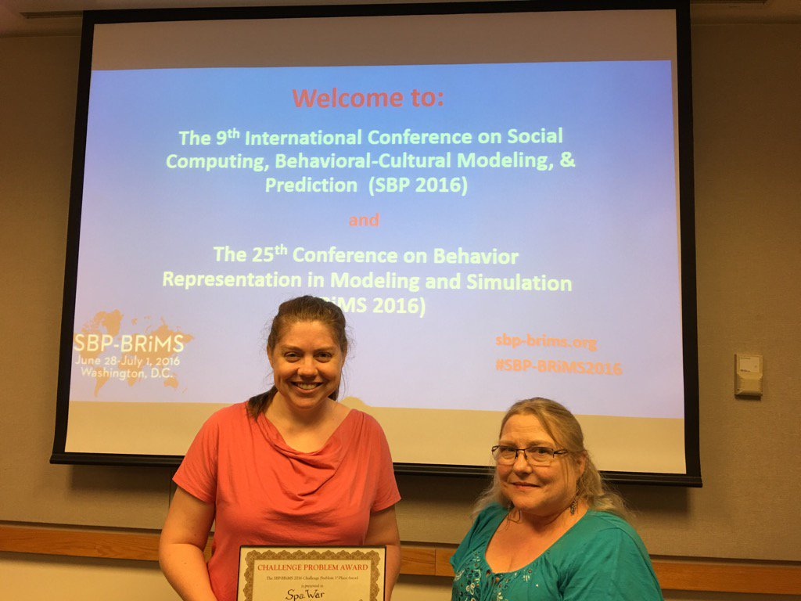

(as part of the SBP-BRiMS2017 conference - July 5-8, 2017)
Social networking websites let users post and share opinions on the web ‘freely’. The authors of the posts are not required to verify the authenticity of the content created. This has lead to the issue of spreading misinformation. False or misleading information that has not been verified and could not be substantiated by facts are sometimes virally circulated on social media giving an impression of authenticity, and sometimes leads to undesirable consequences.
In this year’s SBP-BRiMS challenge problem, we ask participants to consider the issue of circulation of fake news and propaganda on online media for personal or political gains. Using at least one of the suggested datasets (discussed later), and any other relevant publicly accessible dataset, this year’s challenge problem asks participants to address any issue of interest to you (or your team). The issue should relate to any of the following topics: Fake News and/or Propaganda.
The broad questions of interest are:
These questions are only intended to give a rough idea of what might be an interesting topic to explore for this challenge problem, and by no means the only questions of interest. All entries must have both a strong social theory, political theory or policy perspective and a strong methodology perspective.
A strong entry will have one or more of these components:
In addition, a strong entry should be well-written and provide some level of creativity in its use of or combination of data.
-->What to Submit
You need to submit 3 things - An extended abstract, A PDF of your poster, and a Powerpoint promotion slide. All three of these will go in the on-line proceedings.
Extended Abstract: A 2-page abstract describing the project. This should define:
A PDF of your poster: This will be put on line.
You are, however, responsible for printing and bringing your own poster to the conference. An easel will be provided, but not posterboard.
The poster should be either 4’x3’ or 3’x4’.
Promotion Slide: This is a single powerpoint slide. The purpose of this slide is to excite people to come to your poster. This slide will also be put on line. You will be given one minute to present this slide at the conference to encourage people to come and see your poster. This slide should contain:
When to Submit
This abstract is due on June 12, 2017.
The Poster PDF is due on July 5, 2017.
The one page promo slide is due on July 5, 2017.
How to Submit
All abstracts should be submitted through the EasyChair link at at: https://easychair.org/conferences/?conf=sbpbrims2017 for the challenge on the SBP-BRiMS 2017 website. Please be sure to select the Challenge track.
The poster pdf and the one page slide in Powerpoint are to be sent to sbp-brims@andrew.cmu.edu.
What to Present
All entries will send at least one team member to SBP-BRiMS who will be registered for the conference by the early registration deadline to present their poster in the poster-session on July 6, 2017. The poster will be 4’x3’ or 3’x4’. Participants may bring in additional props to enhance their presentation. In addition, the team spokesperson should be ready to present a 1 minute talk using the slide, to encourage people to come to their poster.
How entries will be judged
Entries will be judged by community voting at the poster session.
Who is eligible
Anyone with an interest in using this data to address a social or policy issue. Entries are accepted from single individuals or teams.
The winning entry will be invited to send a team member to present the project at SBP-BRiMS 2018. In addition, winning entry and selected other entries will submit a full paper to a special issue of Computational and Mathematical Organization Theory.
We invite participants to explore one or more of these data sets: Kaggle Fake News, Kaggle Propaganda, ClickBait, Wikipedia or GDELT in conjunction with a second data set which may or may not be from this list. The datasets below consists of records of individual politically-relevant events, from statements of support to military attacks. Each record includes information on the source and target of each action, its date and location, and information about the event itself, machine-coded from media reports. It is important to note that the sites listed as “fake” are those that appear fake to the coding algorithm or human coder, and may or may not actually be fake news sites.
Kaggle Fake News:
Source: https://www.kaggle.com/mrisdal/fake-news
Kaggle has a dataset on fake news. The dataset was added by Megan Risdal and shares data collected by ‘BS Detector’ chrome extension that was created by Daniel Sieradski. The data contains text and metadata information from 244 different websites and contains 12,999 posts.
Please check the website https://www.kaggle.com/mrisdal/fake-news.
Kaggle Propoganda:
Source: https://www.kaggle.com/kzaman/how-isis-uses-twitter
Kaggle also has a dataset on how ISIS uses Twitter. The dataset contains over 17,000 pro ISIS tweets since Nov 2015 Paris attack.
For more information, please check this website http://blog.kaggle.com/2016/06/03/dataset-spotlight-how-isis-uses-twitter/
ClickBait:
This dataset contains four categories of news sources: a) fake b) misleading c) clickbait-y d) satirical.
Check this link http://theduran.com/updated-list-of-false-misleading-clickbait-y-andor-satirical-news-sources/ for more information.
Wikipedia Fake News:
https://en.wikipedia.org/wiki/List_of_fake_news_websites
GDELT:
The GDELT database (http://www.gdeltproject.org/) is divided into three core data streams, capturing physical activity, counts of key incidents like death, and a graph structure capturing the latent and physical aspects of the global news into a single computable network. GDELT’s event data consists of a quarter-billion geo-referenced dyadic “event records” covering all countries in the world 1979 to present, capturing who did what to whom, when, and where in the CAMEO taxonomy.
GDELT’s count data (2013-present) records mentions of counts of things with respect to a set of predefined categories such as a number of protesters, a number killed, or a number displaced or sickened. GDELT’s Global Knowledge Graph (2013-present) is an attempt to connect the people, organizations, locations, counts, themes, news sources, and events appearing in the news media across the globe each day into a single massive network that captures what’s happening around the world, what its context is and who’s involved, and how the world is feeling about it, each day.
All questions and concerns can be sent to sbp-brims@andrew.cmu.edu
Social Media and Fake News in the 2016 Election: http://www.nber.org/papers/w23089.pdf
When facts and news diverge: http://docs.rwu.edu/cgi/viewcontent.cgi?article=1464&context=law_pubs_blogs
How to spot fake news: http://www.factcheck.org/2016/11/how-to-spot-fake-news/
The submission website will be available at: https://easychair.org/conferences/?conf=sbpbrims2017. Be sure to choose the Challenge track. 